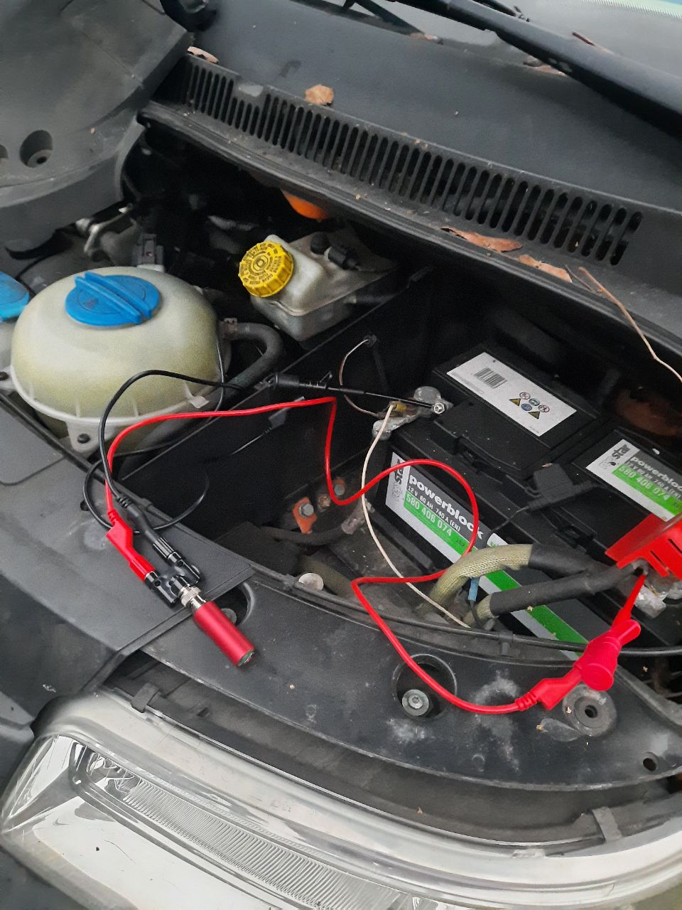

OmnAIScope: Fahrzeugdiagnose am Motor
Präsize, einfach, machbar
Oszilloskope früher
Seit 1897 in Betrieb und doch kaum im Alltag vertreten, weshalb?
Nachteile an alten Oszilloskopen
- Groß, schwer, sperrig
- Komplizierte Bedienung, Triggereinstellung: ein Muss
- Keine digitale Datenspeicherung
- Schnell kaputt
- Aufwendige Diagnose – Kein direkter Datenexport möglich
- Keine Analyse-Software – Keine moderne Schnittstelle zur Auswertung
- Daten können nicht wieder aufgerufen werden
- Hohes Maß an Vorkenntnissen nötig
Das OmnAIScope
Das Oszilloskop von heute, für die Hosentasche


Vorteile des OmnAIScopes
- Kompakt & mobil
- Einfache Bedienung, keine Triggereinstellung
- Automatische Datenerfassung
- Steuerung per Laptop/Tablet
Und damit analysieren ?
- Messdaten können wieder verwendet werden
- Messdaten über KI analysieren
- Messdaten mit einem Speicher von Gutbildern vergleichen
- ➤ Und das alles vom Handy aus
Doch warum Analyse direkt am Motor?
Das Problem mit der aktuellen Fahrzeuganalyse
Der aktuelle Diagnoseprozess
Fehlercodes geben nur einen groben Rahmen wo der Fehler liegt
graph TD;
A[Kunde kommt mit defektem Auto] --> B[Werkstatt liest Fehlercode aus];
B --> C{Möglichkeiten};
C -->|Teil austauschen| D[Hoher Kostenaufwand];
D --> E[1 Woche später - Fehler nicht behoben];
E --> F[Kunde unzufrieden];
F --> A;
classDef error fill:#D9534F,stroke:#fff,stroke-width:2px,color:#fff;
classDef warning fill:#F0AD4E,stroke:#fff,stroke-width:2px,color:#fff;
class D error;
class E error;
class F error;
class C warning;
Der verbesserte Diagnoseprozess
graph TD;
A[Kunde kommt mit defektem Auto] --> B[Werkstatt liest Fehlercode aus];
B --> C{Möglichkeiten};
C -->|Teil austauschen| D[Hoher Kostenaufwand];
D --> E[1 Woche später - Fehler nicht behoben];
E --> F[Kunde unzufrieden];
F --> A;
C -->|Fehleranalyse| G[Werkstattmitarbeiter findet exakten Fehler];
G --> H[Er tauscht oder repariert das richtige Teil];
H --> I[Fehler überprüfbar];
I --> J[Einmalige geringere Ausgaben];
J --> K[Zufriedener Kunde];
classDef success fill:#44AA44,stroke:#fff,stroke-width:2px,color:#fff;
classDef process fill:#007BFF,stroke:#fff,stroke-width:2px,color:#fff;
class G process;
class H process;
class I success;
class J success;
class K success;
Das OmnAIScope als Fahrzeugdiagnosetool
Das Werkstattkonzept
graph TD;
OmnAIScopes --> Server;
Server -.-> Datenanzeige;
Server -.-> Speicher;
Server -.-> Analyse;
Analyse -.-> Datenanzeige;
Datenanzeige -.-> Server;
Funktionalität im Prerelease
- Kompakt & mobil
- Einfache Bedienung
- Automatische Datenerfassung
- Steuerung per Laptop/Tablet
Die Zielgruppe im Prerelease
ü뮂Äçüîß Werkst√§tten mit Erfahrung in Oszilloskopen
üîç F√ºr alle, denen der Aufwand mit einem normalen Oszilloskop zu hoch ist
Der Release des OmnAIScopes
Funktionalitätserweiterung im nächsten Jahr:
- üì± Mobile Steuerung
- üöó Fahrbetrieb-Messungen ‚Äì Aufnahmen w√§hrend der Fahrt
- üíæ Speicher mit Gutbildern
- ü©∫ Digitale Fahrzeugakte
- üìä Einfache Analysen
Zielgruppe des Release:
- üîß Werkst√§tten, die noch nie mit Oszilloskopen gearbeitet haben
- üîç Werkst√§tten, die lieber reparieren statt ersetzen
- ü뮂Äçüéì Betriebe, die Azubis gezielt ausbilden m√∂chten
- üí∞ Werkst√§tten, die durch Messen Kosten sparen wollen
Die Zukunft von OmnAIScope
Die langfristige Version
- üì± KI gest√ºtze Fahrzeugdiagnose
- üöó Erweiterbare Diagnoseger√§te ‚Äì Temperatur, EFeld, Vibration alles √ºber eine Software
- üíæ Intelligentes Supportsystem
Zielgruppe des OmnAIScopes auf lange Sicht
- üîß Von erfahrenen KFZ-Schraubern bis zu jungen Azubis
- Die Fahrzeugdiagnose ist nun für jeden einfach, günstig und machbar
Das OmnAIScope im Einsatz


OmnAIScope Händler


Unser Ziel
Effiziente, kostensparende und präzise Fahrzeugdiagnose für jede Werkstatt.
Seien Sie Teil der Zukunft der Fahrzeugdiagnose!